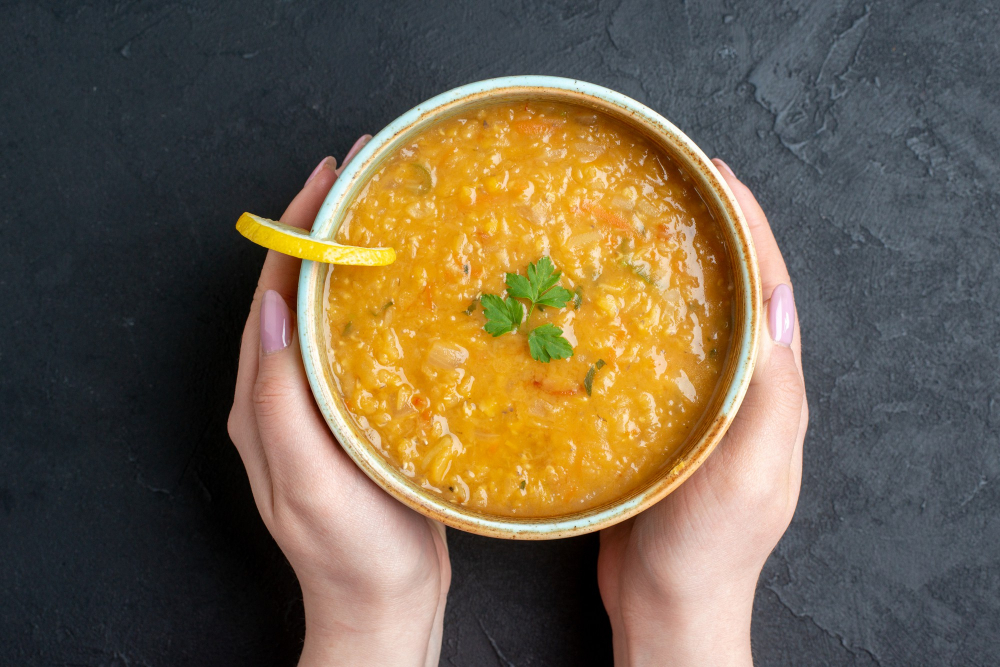

Peasoup

Description
There's nothing like classic split pea soup to satisfy your comfort
food craving. This split pea soup recipe is complete with ham,
hearty veggies, and simple seasonings.
Ingredients
- Dried split peas: Find dried split peas on the dried beans and rice aisle
- Cold water: You'll need two quarts of cold water for this soup
- Ham bone: A ham bone is cooked with the peas, adding a wonderfully meaty flavor
- Vegetables: You'll need two onions, three carrots, three celery stalks, and one potato
- Spices and seasonings: This split pea soup recipe is seasoned with salt, black pepper,
and dried marjoram
Steps
- Place split peas in a large stockpot and cover with cold water; let soak, about 1 hour
- Drain and rinse peas; add two quarts of cold water, ham bone, onions, and seasonings to the pot
- Bring to a boil, then simmer for about 90 minutes
- Remove the meat from the ham bone and return the meat to the pot
- Add the vegetables and cook until the vegetables are tender
Home